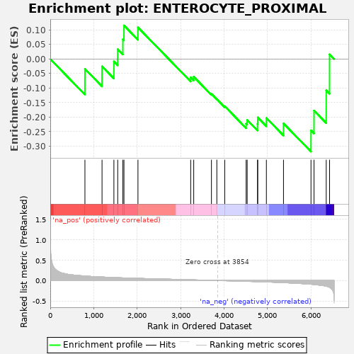
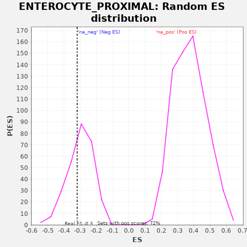

| | | Dataset | al10_v_al2 |
| Phenotype | NoPhenotypeAvailable |
| Upregulated in class | na_neg |
| GeneSet | ENTEROCYTE_PROXIMAL |
| Enrichment Score (ES) | -0.31862843 |
| Normalized Enrichment Score (NES) | -1.063217 |
| Nominal p-value | 0.36231884 |
| FDR q-value | 0.45061582 |
| FWER p-Value | 0.644 |
Table: GSEA Results Summary

Fig 1: Enrichment plot: ENTEROCYTE_PROXIMAL
Profile of the Running ES Score & Positions of GeneSet Members on the Rank Ordered List
| PROBE | GENE SYMBOL | GENE_TITLE | RANK IN GENE LIST | RANK METRIC SCORE | RUNNING ES | CORE ENRICHMENT | | 1 | Cyb5r3 | | | 798 | 0.110 | -0.0340 | No |
| 2 | Cyb5b | | | 1192 | 0.086 | -0.0255 | No |
| 3 | Khk | | | 1465 | 0.073 | -0.0083 | No |
| 4 | Ephx2 | | | 1553 | 0.069 | 0.0338 | No |
| 5 | Ugdh | | | 1672 | 0.065 | 0.0677 | No |
| 6 | Adh6a | | | 1697 | 0.064 | 0.1155 | No |
| 7 | Fabp1 | | | 2019 | 0.053 | 0.1087 | No |
| 8 | Rbp2 | | | 3233 | 0.018 | -0.0632 | No |
| 9 | Aldob | | | 3303 | 0.016 | -0.0611 | No |
| 10 | Dhrs1 | | | 3711 | 0.005 | -0.1199 | No |
| 11 | Retsat | | | 3835 | 0.001 | -0.1383 | No |
| 12 | Lpgat1 | | | 4017 | -0.004 | -0.1625 | No |
| 13 | Acsl5 | | | 4510 | -0.020 | -0.2224 | No |
| 14 | Ckmt1 | | | 4534 | -0.020 | -0.2097 | No |
| 15 | Mttp | | | 4772 | -0.028 | -0.2233 | No |
| 16 | Scp2 | | | 4777 | -0.029 | -0.2010 | No |
| 17 | H2-Q2 | | | 4976 | -0.035 | -0.2031 | No |
| 18 | Gpd1 | | | 5370 | -0.052 | -0.2216 | No |
| 19 | Ckb | | | 6003 | -0.091 | -0.2456 | Yes |
| 20 | Prap1 | | | 6073 | -0.098 | -0.1776 | Yes |
| 21 | Ms4a10 | | | 6354 | -0.140 | -0.1080 | Yes |
| 22 | Slc5a1 | | | 6431 | -0.169 | 0.0161 | Yes |
Table: GSEA details [plain text format]

Fig 2: ENTEROCYTE_PROXIMAL: Random ES distribution
Gene set null distribution of ES for ENTEROCYTE_PROXIMAL